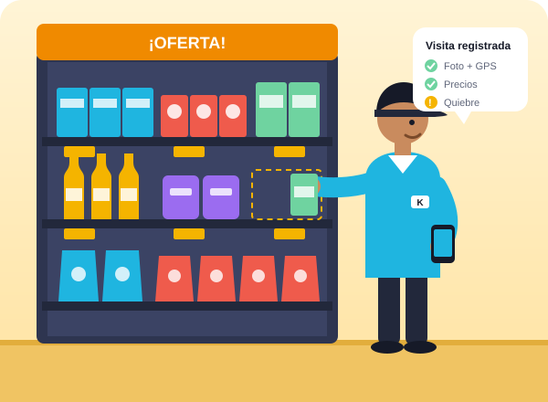
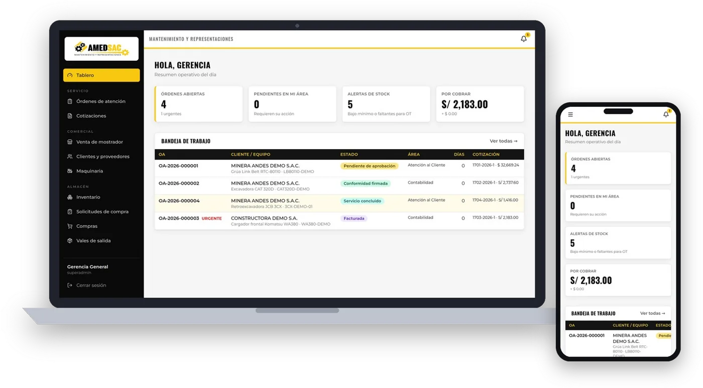
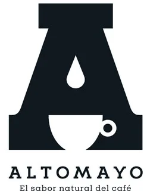

Mercaderismo
Reposición, orden y frenteo de su producto en anaquel, con rutas y frecuencias definidas por canal.
Empresa peruana · Lima y provincias
En KLIX SERVICE reunimos dos especialidades: trade marketing para consumo masivo y desarrollo tecnológico para que su empresa venda más y gestione mejor.
Lo que hacemos
Ejecución en el punto de venta para marcas de consumo masivo: canal tradicional y moderno, con personal en campo y reportes en tiempo real.
Conocer más → 02ERP en la nube hecho a la medida de su operación, tercerización de su área de TI y venta de suministros de cómputo.
Conocer más →Especialidad 01
Su producto bien exhibido, con precio visible y stock en anaquel. Llevamos su estrategia comercial a bodegas, mercados, mayoristas y supermercados.

Reposición, orden y frenteo de su producto en anaquel, con rutas y frecuencias definidas por canal.
Impulsadores capacitados en su marca para mover la rotación en tienda, ferias y fines de semana.
Lanzamientos, muestreo y dinámicas en punto de venta que convierten la prueba en compra.
Diseño, producción e instalación de material POP, exhibidores, cabeceras y ventanas.
Presencia, precios, quiebres de stock, participación en góndola y acciones de la competencia.
Cobertura de bodegas y mercados, y negociación de espacios y exhibiciones en autoservicios.
Nuestro personal registra visitas, fotos con hora y ubicación, precios y quiebres desde el celular. Usted ve los resultados en un tablero, sin esperar el reporte de fin de mes.
Especialidad 02
Damos soporte a negocios en sus sistemas: implementamos ERP, mantenemos su operación al día y tercerizamos su área de TI para que usted se enfoque en crecer.
Ventas, compras, almacén, servicios, facturación y cobranzas en un solo sistema, adaptado a sus procesos y formatos.
Su área de tecnología a cargo de nuestro equipo, sin planilla adicional.
Equipos, accesorios y suministros de cómputo para la operación diaria de su empresa.
Caso reciente
Desde la recepción del equipo hasta el cobro: flota por cliente con horómetros, cotizaciones con su formato y PDF, órdenes de trabajo con fotos, compras con 3 cotizaciones, inventario por marca, facturación y cuentas por cobrar.

Nuestros clientes

…y más empresas en Lima y provincias.
Quiénes somos
KLIX SERVICE es una empresa peruana que une la ejecución comercial en el punto de venta con la tecnología que ordena la gestión. Trabajamos con marcas de consumo masivo, distribuidoras, talleres y empresas de servicios en Lima y provincias.
Contacto
Cuéntenos qué necesita y le respondemos el mismo día hábil.